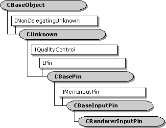

description: The CBaseRendererInputPin class implements an input pin for the CBaseRenderer class. Except where noted, the methods in this class delegate to corresponding methods on the CBaseRenderer class. ms.assetid: da3e6aba-c2cc-4fd4-b382-fc4bc7fef774 title: CRendererInputPin class (Renbase.h) ms.topic: reference ms.date: 4/26/2023 topic_type:
[The feature associated with this page, DirectShow, is a legacy feature. It has been superseded by MediaPlayer, IMFMediaEngine, and Audio/Video Capture in Media Foundation. Those features have been optimized for Windows 10 and Windows 11. Microsoft strongly recommends that new code use MediaPlayer, IMFMediaEngine and Audio/Video Capture in Media Foundation instead of DirectShow, when possible. Microsoft suggests that existing code that uses the legacy APIs be rewritten to use the new APIs if possible.]

The CBaseRendererInputPin class implements an input pin for the CBaseRenderer class. Except where noted, the methods in this class delegate to corresponding methods on the CBaseRenderer class.
| Protected Member Variables | Description |
|---|---|
| m_pRenderer | Pointer to the filter. |
| Public Methods | Description |
| CRendererInputPin | Constructor method. |
| BreakConnect | Adds customized code upon breaking a connection. |
| CompleteConnect | Completes the connection. |
| CheckMediaType | Determines if the pin can support a specific media type. |
| Active | Switches the pin to the active (paused or running) mode. |
| Inactive | Switches the pin to an inactive state and releases the memory of the allocator. |
| SetMediaType | Sets the media type of the pin. |
| Allocator | Retrieves a pointer to the default memory allocator. |
| IPin Methods | Description |
| QueryId | Retrieves an identifier for the pin. |
| EndOfStream | Informs the pin that no additional data is expected until a new run command is issued. |
| BeginFlush | Informs the pin to begin a flush operation. |
| EndFlush | Informs the pin to end a flush operation. |
| IMemInputPin Methods | Description |
| Receive | Retrieves the next block of data from the stream. |
| Requirement | Value |
|---|---|
| Header | Renbase.h (include Streams.h) |
| Library | Strmbase.lib (retail builds); Strmbasd.lib (debug builds) |